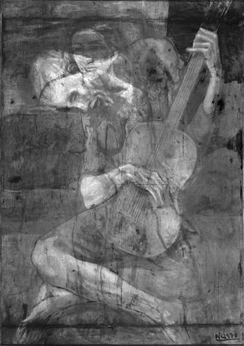

The Old Guitarist
The Old Guitarist, late 1903-early 1904
Detail from The Old Guitarist

Infrared image of The Old Guitarist, showing painting underneath
- Artist: Pablo Picasso
- Date: Late 1903–early 1904
- Medium: Oil on panel